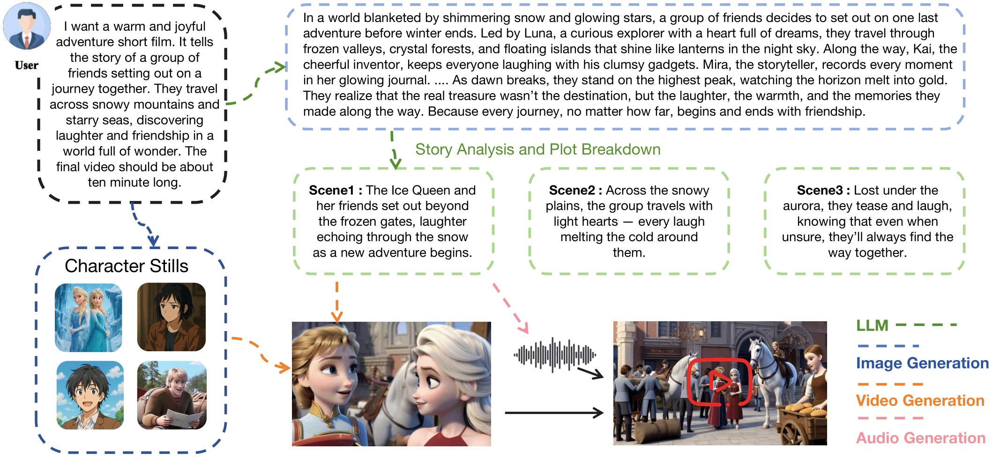

Abstract
Text-to-video generation has progressed rapidly with diffusion and autoregressive models, yet creating coherent long-form audiovisual content remains challenging. Existing approaches often fail to preserve narrative consistency, character identity, and sound synchronization across extended sequences. We introduce DramaAgent, an end-to-end multimodal framework for text-to-video-and-audio generation. Unlike conventional diffusion-based systems, DramaAgent employs a hierarchical agentic architecture that decomposes narratives into keyframes, segments, and synchronized audio tracks. It integrates planning, generation, and self-evolving refinement within a unified pipeline for adaptive quality improvement. Experiments show that DramaAgent achieves superior temporal coherence, motion smoothness, and audiovisual consistency, generating coherent videos up to 300 seconds long. DramaAgent provides a scalable foundation for future research in coherent and perceptually aligned audiovisual generation.
Method
Overview of the story creation workflow. The user provides a short narrative prompt describing the desired tone and theme. An LLM generates the main storyline and performs Story Analysis and Plot Breakdown, dividing the narrative into sequential scenes with thematic coherence. Image Generation modules create Character Stills, while Video and Audio Generation modules render visual and sound outputs respectively. The final system integrates these components to produce a cohesive animated short film.

Foundation Model Comparison
Comparison of video generation quality across four commercial APIs: Hailuo, Keling, Jimeng, and SeedDance.